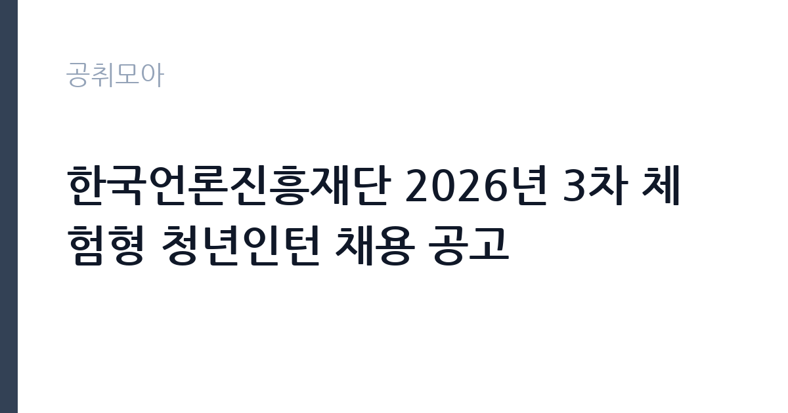

[공공기관] 한국언론진흥재단 2026년 3차 체험형 청년인턴 채용 공고
한국언론진흥재단 · 서울 · 마감 2026-11-09 (D-14) · 출처 잡알리오

한눈에 보는 모집 조건
| 기관 | 한국언론진흥재단 |
|---|---|
| 공고명 | 한국언론진흥재단 2026년 3차 체험형 청년인턴 채용 공고 |
| 고용형태 | 청년인턴(체험형) |
| 근무지 | 서울 |
| 게시일 | 2026-10-26 |
| 마감일 | 2026-11-09 (D-14) |
지원자격, 이렇게 읽으세요
- 공공기관 채용공시
- 세부 조건은 원문 공고문 확인
체험형 인턴은 취업 준비생에게 직무 경험을 제공하는 단기 채용입니다. 근무 기간이 3개월에서 6개월로 정해져 있고 인턴료가 지급됩니다. 기관에 따라 수료증 발급이나 채용 시 가점 같은 혜택이 붙습니다. 이번 공고는 한국언론진흥재단에서 직접 진행하는 자체 전형으로, 응시자격과 제출서류는 공고문에 항목별로 제시됩니다. 체험형 인턴은 청년, 장애인, 자립준비청년 같은 대상별 전형으로 나뉘는 경우가 많습니다. 본인이 어느 전형에 해당하는지 먼저 확인해야 하며 증빙 서류가 필수입니다. 재학생과 졸업생 지원 가능 여부, 연령 기준, 타 인턴 경험 제한 조항이 자주 붙습니다. 일부 기관은 인턴 근무 경력이 있으면 재지원을 제한합니다. 근무 기간과 인턴료, 수료 요건을 공고문에서 확인하십시오. 서류는 접수 마감 이후 보완이 되지 않으므로 자격 요건과 증빙 서류를 마감 전에 모두 갖춰야 합니다. 공고문에 명시된 우대 사항은 해당 여부를 확인해 증빙을 첨부해야 가점이 반영됩니다. 학력이나 전공 요건이 없는 공고라도 제출서류 목록은 그대로 적용되므로 서류 준비 부담은 줄지 않습니다. 이 공고 원문에 적힌 응시 조건 문구는 '학력, 성별, 전공, 출생지 등 직무와 관련 없는 일체의 제한 없음' / '※ 단, 임용 후 즉시 근무가 가능해야 하며, 근무 불가 시 임용 취소(별도 숙소지원 없음)' / '「청년고용특별촉진법」상 청년(만 15세 이상 만 34세 이하)이 아닌 사람은 지원 자격이 없음'입니다. 문구를 그대로 읽고 본인 해당 여부를 하나씩 표시해 두면 서류 단계에서 탈락하는 일을 줄일 수 있습니다.
이 공고의 포인트
이 공고의 첫 번째 포인트는 고용 형태입니다. 짧은 기간이지만 직무 경험과 수료 실적을 쌓을 수 있고, 기관에 따라 채용 시 가점이 붙습니다. 두 번째는 업무 범위가 명확하다는 점입니다. 체험형 인턴 직무로 채용되므로 배치 이후 담당 업무가 크게 흔들리지 않습니다. 세 번째는 근무지입니다. 서울 지역 근무로 접근성은 좋지만 그만큼 지원자가 몰리는 지역이므로 경쟁률을 넉넉히 잡아야 합니다. 접수 기간이 길지 않아 서류 준비와 자격 확인을 동시에 진행해야 합니다. 같은 직무 공고 중에서는 접수 마감이 가장 빨라 일정을 앞당겨 잡아야 합니다. 선발 인원은 공고문에 명시되어 있으니 모집분야 항목을 함께 확인하십시오.
전형은 어떻게 진행되나
서류전형과 면접전형 외에 직무수행능력 평가가 붙는 경우가 있습니다. 평가 방식은 공고문에 구체적으로 적혀 있으므로 어떤 항목에 배점이 높은지 먼저 파악하십시오. 면접에서는 지원 동기보다 실제 업무 경험에 대한 질문이 많고, 답변의 구체성이 평가를 가릅니다. 전형 일정은 서류 마감 이후 빠르게 진행되므로 연락 가능한 번호를 정확히 기재하고 문자와 메일을 수시로 확인해야 합니다. 최종 단계에서는 결격사유 조회와 신체검사가 진행됩니다. 결과 발표는 문자와 이메일로 동시에 이뤄지지 않는 경우가 있어 두 경로를 모두 확인하십시오.
원문에서 확인한 전형 방식
학력, 성별, 전공, 출생지 등 직무와 관련 없는 일체의 제한 없음 ※ 단, 임용 후 즉시 근무가 가능해야 하며, 근무 불가 시 임용 취소(별도 숙소지원 없음) - 접수 마감일 현재 취업이 결정된 사람은 제외 - 「청년고용특별촉진법」상 청년(만 15세 이상 만 34세 이하)이 아닌 사람은 지원 자격이 없음 - 「제대군인지원에 관한 법률」 제2조 및 제16조, 같은 법 시행령 제19조에 따라 제대군인의 응시연령 상한을 군 복무기간에 따라 연장함.(군복무기간 1년 미만 : 1세, 1년 이상∼2년 미만 : 2세, 2년 이상 : 3세 연장)
이런 분께 추천해요
- 해당 전형의 지원 자격을 충족하는 분
- 짧은 기간에도 배우고 기여하려는 태도가 있는 분
- 기관 업무에 관심을 갖고 사전 조사를 해온 분
지원 전 체크리스트
- 응시자격 요건과 경력 기준을 충족하는가 — 경력은 증명서로 입증해야 합니다
- 인턴 기간과 수료 요건, 지원 자격 전형을 확인했는가
- 제출서류 목록을 모두 준비했는가 — 누락 시 서류 단계에서 탈락합니다
- 접수 마감 2026-11-09 이전에 접수 방식을 확인해 제출했는가
모집 일정과 제출 타이밍
2026-10-26에 공고가 올라왔고 접수는 2026-11-09까지입니다. 남은 기간은 14일이며, 이 기간에 자격증 사본과 경력증명서, 주민등록등본 같은 기본 서류를 모두 준비해야 합니다. 경력증명서는 발급에 며칠이 걸리는 경우가 있으니 가장 먼저 신청하십시오. 접수는 온라인과 우편·방문으로 나뉘는 경우가 많고, 우편 접수는 도착 기준으로 판정되므로 마감일 소인만 믿으면 안 됩니다. 면접 일정은 서류 발표 후 개별 통보되므로 제출 후에도 연락을 받을 수 있도록 유지해야 합니다. 임용 예정일이 빠르게 잡히는 공고이므로 현재 일정과 겹치지 않는지 미리 확인하십시오. 서울 근무지는 대중교통 접근성이 좋은 대신 주차와 통근 시간이 변수입니다. 출퇴근 경로를 미리 확인하십시오. 마감까지 2주 안팎이 있어 준비할 시간은 있지만 미루면 촉박해집니다. 선발 인원은 공고문의 모집분야 항목에 직종별로 제시되어 있습니다.
직무 이해하기: 공공기관
연구·교육 지원 기관은 정책 연구와 조사 분석, 교육 프로그램 운영을 담당합니다. 과제 기반으로 인력을 채용하는 경우가 많아 계약 기간과 성과 목표가 명확히 정해집니다. 보고서와 연구 성과물의 품질 기준이 높습니다. 체험형 인턴은 정해진 기간 동안 실제 부서에 배치되어 업무를 보조하며 직무를 경험하는 자리입니다. 부서에 따라 문서 작성과 자료 정리, 데이터 입력, 행사 지원, 현장 업무 보조 등을 맡습니다. 인턴 기간 중에는 직무 교육과 멘토링이 제공되는 경우가 많고 결과 보고서를 제출해야 하는 프로그램도 있습니다. 근무 기간은 3개월에서 6개월이 일반적이며, 기관에 따라 채용 연계나 서류 가점 같은 혜택이 붙습니다. 업무는 혼자 처리하기보다 부서 단위로 나눠 진행되므로 담당 구역과 협업 범위를 입사 초에 확인하는 것이 중요합니다. 현장 업무와 사무 업무의 비중은 기관의 사업 일정에 따라 계절별로 달라집니다.
자기소개서 작성 팁
인턴 지원서는 성장 가능성과 실행력을 보여주는 것이 핵심입니다. 부족한 경력을 감추기보다 배운 것을 빠르게 적용한 사례를 쓰십시오. 지원 기관의 사업을 조사해 구체적인 업무 아이디어를 제시하면 준비도가 드러납니다. 인턴 이후 어떤 직무로 성장하고 싶은지 방향을 밝히면 좋습니다. 문항별 글자 수 제한을 먼저 확인하고, 각 문항의 첫 문장에 결론을 배치하는 방식이 읽기 쉽습니다. 지원 동기는 기관의 어떤 사업에 기여하겠다는 한 문장으로 시작하고, 이어서 본인의 경험을 근거로 붙이십시오. 감점을 피하려면 다른 기관에 보낼 수 있는 범용 문장을 그대로 쓰지 않는 것이 중요합니다. 기관 이름과 사업명이 문장 안에 자연스럽게 들어가야 준비도가 드러납니다.
면접 준비 포인트
면접에서는 지원 동기와 배우려는 태도를 봅니다. 인턴 기간에 무엇을 얻고 싶은지 구체적으로 말할 수 있어야 하고, 학교나 아르바이트에서 맡았던 역할을 근거로 제시하면 좋습니다. 특정 업무만 하려는 인상을 주면 감점입니다. 기간이 짧다는 점을 인정하고 그 안에 무엇을 해낼 수 있는지 계획으로 답하십시오. 답변은 상황, 판단, 조치의 순서로 정리하면 전달이 분명해집니다. 모르는 질문에는 모른다고 밝히고 확인 방법을 제시하는 편이 억지 답변보다 낫습니다. 마지막에는 근무 의사와 함께 2026-11-09 이후 일정에 언제든 응할 수 있다는 점을 전달하십시오. 지원 기관의 최근 사업이나 조직 개편 내용을 확인해 두면 지원 동기 질문에서 차이가 납니다.
급여·근무조건 읽는 법
알리오(공공기관 경영정보 공개시스템) 2025년 결산 경영공시 기준으로 한국언론진흥재단 일반정규직 1인당 평균보수액은 7,984만원, 공시된 신입사원 초임은 3,630만원입니다. 무기계약직 1인당 평균보수액은 6,280만원으로 공시되어 정규직과 차이가 납니다. 평균보수액은 기본급에 고정수당·실적수당·성과상여금·급여성 복리후생비를 모두 합산한 값이라 월 기본급만 보고 판단하면 실제와 크게 어긋납니다. 체험형 인턴은 정규직 보수 체계가 아니라 별도 인턴료 기준을 적용받습니다. 체험형 인턴의 보수는 기관이 정한 인턴료 기준을 따르며 월급 또는 일급 형태로 지급됩니다.인턴료에 식대나 교통비가 포함되는지 별도로 지급되는지 확인해야 합니다. 4대 보험 가입 여부와 근무 기간도 함께 확인하십시오. 구체적인 금액은 공고문에서 확인할 수 있습니다. 2026년 적용 최저임금은 시급 10,320원, 월 환산 2,156,880원(주 40시간·209시간 기준)입니다. 고용노동부 고시 제2025-47호로 확정된 금액입니다. 공고문에 금액이 제시되지 않은 항목은 원문 보수표나 처우 설명에서 확인해야 하며 확인되지 않은 수치는 쓰지 않는 것이 원칙입니다. 비교할 때는 월 급여뿐 아니라 상여·명절휴가비·복지포인트·초과근무수당까지 포함한 연간 총액으로 계산하십시오. 기간제라면 계약 기간 동안의 총액을, 무기계약이라면 호봉 상승과 정년까지의 누적 소득을 기준으로 판단하는 편이 정확합니다.
자주 묻는 질문
- 선발 인원은 몇 명인가요?
공고문의 모집분야 항목에 직종별 인원이 표로 제시되어 있습니다. 첨부된 공고문 원문에서 확인하십시오. - 근무지는 어디인가요?
서울 지역의 한국언론진흥재단 소속 근무지입니다. 세부 주소와 출퇴근 조건은 원문 공고문에서 확인할 수 있습니다. - 보수는 얼마인가요?
채용 신분(체험형 인턴)과 기관 임금 규정에 따라 정해지며 구체적인 금액은 공고문 처우 항목에 제시됩니다. 금액이 공개되지 않은 경우에는 원문의 보수표를 확인하십시오.
함께 보면 좋은 공고
[공공기관] 한국도로공사 대전충남본부 관내 지사(천안, 대전, 영동, 당진, 공주, 부여) 제설 기간제근로자(정비원) 채용 — 마감 2026-11-03[공공기관] 한국도로공사 대전충남본부 관내 지사(천안, 대전, 영동, 당진, 공주, 부여) 제설 기간제근로자(운전원) 채용 — 마감 2026-11-03[공공기관] 한국도로공사 대전충남본부 관내 지사(천안, 대전, 영동, 당진, 공주, 부여) 제설 기간제근로자(도로관리원) 채용 — 마감 2026-11-03출처: 잡알리오 공개정보를 바탕으로 공취모아가 정리한 안내글입니다. 모집 조건·일정은 변경될 수 있으니 지원 전 반드시 원문 공고문을 확인하세요. 본 글은 정보 제공용이며 합격을 보장하지 않습니다.